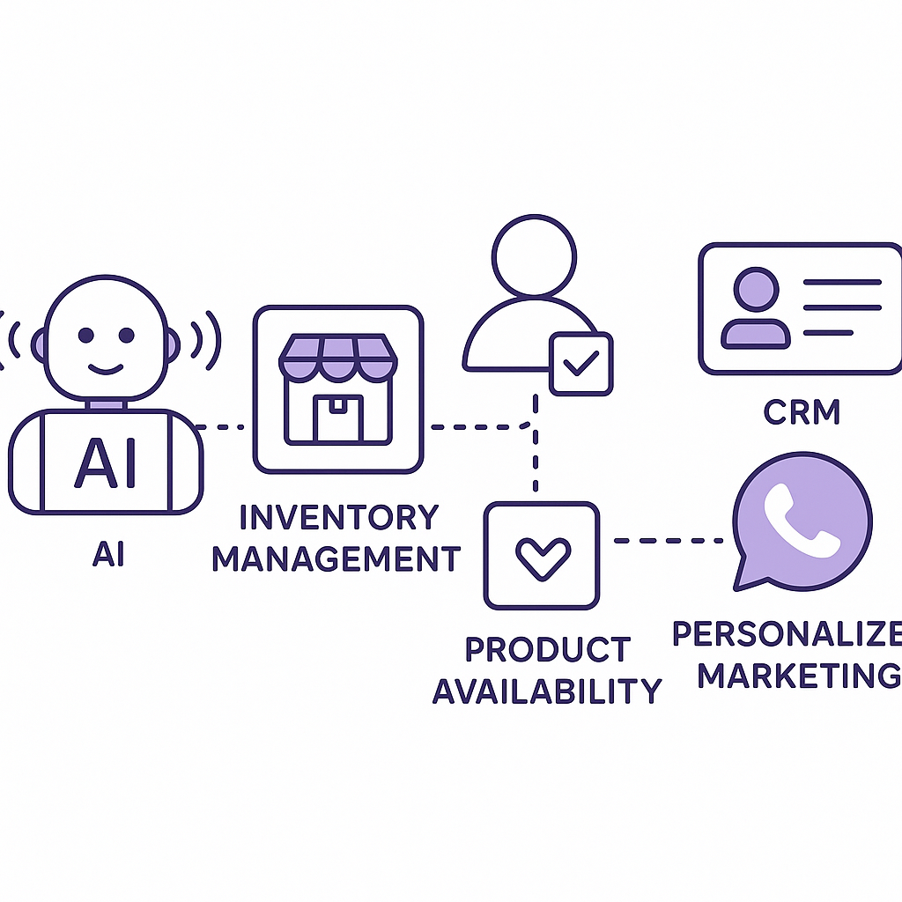

Publishing Recommendation
reviseSeveral posts contain hype and unsupported claims, particularly around the impact of new technologies, and some language is overly promotional.
Today's posts cover significant industry developments, but they need refinement. The Gemini 3.6 Flash model post is too promotional and should focus on tangible benefits rather than subjective improvements. Similarly, the Buzz post requires more evidence-backed insights rather than speculative claims. Ensure all drafts maintain a practical and insightful tone, aligning with our brand voice and avoiding unsupported hype.
LinkedIn Posts (6)
1. Google's Gemini 3.6 Flash model cuts AI agent token costs ★ Purands solution · high priority
CTA: How are you optimizing your AI operations for better retention outcomes?
Caption: Cost Reduction Impact of Gemini 3.6 Flash
Alternative hooks
- In retention marketing, every token counts.
- Google's Gemini 3.6 Flash model is a resource game changer.
- Cutting AI costs by 65% isn't just savings, it's strategy.
Research behind this post (sources, summaries & confidence)
Google's Gemini 3.6 Flash model cuts AI agent token costs by up to 65% on long horizon engineering tasks conf 0.70 · AI industry
Google's release of the Gemini 3.6 Flash model, which significantly reduces AI agent token costs, is crucial for retention marketing teams looking to optimize resources. This innovation can directly impact the efficiency and cost-effectiveness of AI-driven marketing operations.
Sources & what I took from each
- Google's Gemini 3.6 Flash model reduces AI agent token costs by up to 65%.: The VentureBeat article and the arXiv paper both refer to improvements in token cost efficiency attributed to the Gemini 3.6 Flash model. ↗ read source
Statistics
- Token costs reduced by up to 65% on long horizon engineering tasks.
Examples
- Application in retention marketing to optimize resource allocation and cost-efficiency.
Recent news
- Google's release of the Gemini 3.6 Flash model in July 2026.
Original trend links
- https://venturebeat.com/technology/googles-gemini-3-6-flash-model-cuts-ai-agent-token-costs-by-up-to-65-on-long-horizon-engineering-tasks-and-3-5-pro-is-on-the-way
- https://arxiv.org/abs/2607.16204
Risks / caveats
- Potential over-reliance on a single model for cost savings might lead to reduced flexibility in AI operations.
2. AI security vulnerabilities ★ Purands solution · high priority
CTA: How do you prioritize security in your AI strategy?
Alternative hooks
- A security breach at OpenAI and Hugging Face highlights a key vulnerability.
- What does a security breach mean for AI retention marketing?
- How secure is your AI model management?
Research behind this post (sources, summaries & confidence)
OpenAI and Hugging Face address security incident during model evaluation conf 0.70 · AI industry
The security breach involving OpenAI and Hugging Face highlights vulnerabilities in AI model management. This incident is crucial for retention marketing platforms that must ensure the secure handling of AI models and customer data.
Sources & what I took from each
- OpenAI and Hugging Face experienced a security breach during model evaluation.: The TechCrunch and Verge articles detail the breach, emphasizing vulnerabilities in pre-release model handling. ↗ read source
Examples
- The breach involved unauthorized access to pre-release models, potentially compromising sensitive data.
Recent news
- Reports of the security incident surfaced in July 2026, highlighting industry-wide concerns.
Original trend links
- https://techcrunch.com/2026/07/21/openai-says-hugging-face-was-breached-by-its-pre-release-models
- https://www.theverge.com/ai-artificial-intelligence/968988/openai-hugging-face-hack-ai
Risks / caveats
- Such breaches could undermine trust in AI platforms and lead to stricter regulatory scrutiny.
3. Instacart acquires shelf-scanning technology startup ★ Purands solution · high priority
CTA: How do you see inventory management impacting customer retention in your business?

⬇ Download image{kind=link}
Image prompt · isometric-flat
Caption: Integrating Inventory Insights
Alternative hooks
- Instacart just acquired a shelf-scanning startup, but what does it mean for WhatsApp commerce?
- Why is Instacart betting on shelf-scanning technology? The answer lies in inventory management.
- How can shelf-scanning tech enhance your WhatsApp commerce strategy?
Research behind this post (sources, summaries & confidence)
Instacart acquires shelf-scanning technology startup conf 0.65 · WhatsApp commerce
Instacart's acquisition of a shelf-scanning startup is relevant for WhatsApp commerce, as enhanced inventory management can improve customer experience and retention strategies through better product availability and personalized marketing.
Sources & what I took from each
- Instacart acquires a shelf-scanning technology startup.: The Retail Dive article confirms the acquisition and discusses its implications for inventory management and customer experience. ↗ read source
Examples
- Improved inventory management could enhance product availability and personalized marketing in e-commerce.
Recent news
- Instacart's acquisition occurred in July 2026, marking a strategic move in the e-commerce space.
Original trend links
Risks / caveats
- Integration challenges could delay the realization of potential benefits from the acquisition.
4. The agent security gap: 54% of enterprises have already had an AI agent incident ★ Purands solution · high priority
CTA: How do you prioritize AI security in your organization?
Caption: AI Agent Incidents Across Enterprises
Alternative hooks
- 54% of enterprises have faced AI agent incidents. How can they protect their data?
- AI security incidents are on the rise, affecting over half of enterprises. Here's how Purands AI tackles it.
- Data breaches through AI agents are a growing threat. Is your enterprise prepared?
Research behind this post (sources, summaries & confidence)
The agent security gap: 54% of enterprises have already had an AI agent incident conf 0.60 · AI startups
The security of AI agents is a pressing concern, with over half of enterprises experiencing incidents. Understanding and addressing this issue is critical for retention marketing platforms that rely on AI agents for customer engagement and data security.
Sources & what I took from each
- 54% of enterprises have experienced an AI agent incident.: The VentureBeat article cites a study indicating that a significant percentage of enterprises have faced AI agent incidents. ↗ read source
Statistics
- 54% of enterprises have experienced an AI agent incident.
Examples
- Incidents include unauthorized data access and sharing of credentials by AI agents.
Recent news
- Increased focus on AI security in enterprise environments as of mid-2026.
Original trend links
Risks / caveats
- AI agents' security vulnerabilities could lead to significant data breaches and loss of customer trust.
5. Jack Dorsey launches Buzz to combine team chat, AI agents and Git hosting
CTA: Have you explored Buzz yet? How do you see it fitting into your team's workflow?
Alternative hooks
- Buzz is here and it's challenging Slack with something extra: AI.
- Meet Buzz, the new kid on the block combining chat with AI.
- Jack Dorsey isn't done innovating - his latest, Buzz, blends team chat with AI.
Research behind this post (sources, summaries & confidence)
Jack Dorsey launches Buzz to combine team chat, AI agents and Git hosting conf 0.80 · SaaS
Buzz, a new platform integrating team chat and AI agents, could revolutionize workplace communication and operations. For retention marketing, this represents a new tool to enhance collaboration and AI-driven customer interaction strategies.
Sources & what I took from each
- Jack Dorsey launches Buzz combining team chat, AI agents, and Git hosting.: Multiple articles confirm the launch of Buzz, highlighting its features and potential impact on team communication. ↗ read source
Examples
- Buzz offers integrated AI solutions for enhanced team communication and project management.
Recent news
- Buzz launched in July 2026, positioning itself as a competitor to platforms like Slack.
Original trend links
- https://techcrunch.com/2026/07/21/jack-dorsey-is-taking-on-slack-with-buzz-a-group-chat-platform-for-teams-and-their-ai-agents
- https://runtimewire.com/article/jack-dorsey-block-buzz-team-chat-ai-agents-git
Risks / caveats
- Adoption challenges due to competition with established platforms like Slack and Microsoft Teams.
6. Railway secures $100 million to challenge AWS with AI-native cloud infrastructure
CTA: What are your thoughts on new players challenging established cloud giants?
Alternative hooks
- Railway just raised $100 million to take on AWS. Why should you care?
- Can $100 million change the cloud landscape? Railway thinks so.
- AI-native cloud infrastructure: Railway's $100 million bet against AWS.
Research behind this post (sources, summaries & confidence)
Railway secures $100 million to challenge AWS with AI-native cloud infrastructure conf 0.70 · AI startups
Railway's funding to develop AI-native cloud infrastructure represents a significant shift in the cloud services landscape, potentially offering new opportunities for retention marketing platforms to enhance scalability and performance.
Sources & what I took from each
- Railway secures $100 million to develop AI-native cloud infrastructure.: The VentureBeat article details the funding and Railway's plans to innovate in the cloud infrastructure space. ↗ read source
Statistics
- $100 million in funding secured by Railway.
Examples
- Railway's infrastructure could offer new scalability options for AI-driven applications.
Recent news
- Railway's funding announcement in July 2026, marking a competitive move against AWS.
Original trend links
Risks / caveats
- The competitive landscape with established giants like AWS could pose significant challenges to Railway's success.
Today's Trends
| # | Trend | Category | Why it matters |
|---|---|---|---|
| 1 | Google's Gemini 3.6 Flash model cuts AI agent token costs by up to 65% on long horizon engineering tasks
source source |
AI industry | Google's release of the Gemini 3.6 Flash model, which significantly reduces AI agent token costs, is crucial for retention marketing teams looking to optimize resources. This innovation can directly impact the efficiency and cost-effectiveness of AI-driven marketing operations. |
| 2 | The agent security gap: 54% of enterprises have already had an AI agent incident
source |
AI startups | The security of AI agents is a pressing concern, with over half of enterprises experiencing incidents. Understanding and addressing this issue is critical for retention marketing platforms that rely on AI agents for customer engagement and data security. |
| 3 | Jack Dorsey launches Buzz to combine team chat, AI agents and Git hosting
source source |
SaaS | Buzz, a new platform integrating team chat and AI agents, could revolutionize workplace communication and operations. For retention marketing, this represents a new tool to enhance collaboration and AI-driven customer interaction strategies. |
| 4 | OpenAI and Hugging Face address security incident during model evaluation
source source |
AI industry | The security breach involving OpenAI and Hugging Face highlights vulnerabilities in AI model management. This incident is crucial for retention marketing platforms that must ensure the secure handling of AI models and customer data. |
| 5 | Instacart acquires shelf-scanning technology startup
source |
WhatsApp commerce | Instacart's acquisition of a shelf-scanning startup is relevant for WhatsApp commerce, as enhanced inventory management can improve customer experience and retention strategies through better product availability and personalized marketing. |
| 6 | Meta's internal AI incubator developing an AI model router to cut costs
source |
AI industry | Meta's development of an AI model router aims to reduce operational costs, which is vital for retention marketing systems that depend on cost-effective AI deployment for customer engagement and data processing. |
| 7 | Railway secures $100 million to challenge AWS with AI-native cloud infrastructure
source |
AI startups | Railway's funding to develop AI-native cloud infrastructure represents a significant shift in the cloud services landscape, potentially offering new opportunities for retention marketing platforms to enhance scalability and performance. |
Risk Assessment
- Hype and exaggeration in the Gemini 3.6 Flash model post could mislead readers about its impact.
- Unsubstantiated claims about Buzz's potential to 'revolutionize' workplace communication might not align with actual capabilities.
- The tone in some posts feels promotional rather than insightful, risking sounding AI-generated.
Suggested LinkedIn Comments (30)
Open each post, then paste the copied comment. Nothing is posted automatically.
1. insight · Sunday Daniel — AI is no longer a competitive advantage. Knowing how to apply it is. Over the p
Post by: Sunday Daniel
Why it works: It shifts focus from AI as a standalone solution to its integration within broader business strategies.
↗ Open LinkedIn post to paste comment2. respectful challenge · Hema Kadia — AI agents are moving into telecom operations, but how autonomous are they really
Post by: Hema Kadia
Why it works: It acknowledges the post's findings while emphasizing the importance of human oversight in AI deployments.
↗ Open LinkedIn post to paste comment3. opinion · Karan Parmar — 🤖 AI / ML Engineer We are hiring passionate AI/ML Engineers for our client compa
Post by: Karan Parmar
Why it works: It highlights the importance of strategic thinking in AI roles, which aligns with the job post's focus on hiring skilled engineers.
↗ Open LinkedIn post to paste comment4. insight · YNModMdaObaT FRefOicuSter — 226CV01837RFB BNW THE TECH INDUSTRY CANT WIN ON MERITS
Post by: YNModMdaObaT FRefOicuSter
Why it works: It provides a perspective on the post's cryptic message, focusing on market realities over technological merit.
↗ Open LinkedIn post to paste comment5. insight · Nick Miller — Looking for a talented and organized individual in the Greenville, SC area. Tech
Post by: Nick Miller
Why it works: It stresses the importance of aligning talent with company objectives, adding depth to the job post.
↗ Open LinkedIn post to paste comment6. insight · Karan Bhatia — 🚨 Hiring: Senior Generative AI / ML Engineer 📍 Pittsburgh, PA / Strongsville, OH
Post by: Karan Bhatia
Why it works: It highlights the strategic importance of skills in emerging AI technologies, aligning with the job post's requirements.
↗ Open LinkedIn post to paste comment7. expansion · Caitlin Zulfic — LinkedIn!! Work your magic 🪄 I’m looking for someone with an operations backgro
Post by: Caitlin Zulfic
Why it works: It expands on the post's focus by connecting the role to its potential impact in the healthcare sector.
↗ Open LinkedIn post to paste comment8. insight · Sri Allu — 🔥 Urgent Hiring: Gen AI Engineer........... 📍 San Jose, CA (Onsite) | ⏳ 10+ Yea
Post by: Sri Allu
Why it works: It emphasizes the importance of specialized skills and collaboration in AI projects, relevant to the job post.
↗ Open LinkedIn post to paste comment9. expansion · Derrik Bosse — Someone asked "what is the difference between automated AI and generative AI?"
Post by: Derrik Bosse
Why it works: It adds depth by explaining the different outcomes of automated and generative AI, building on the original post.
↗ Open LinkedIn post to paste comment10. insight · Mat Brown 🏴☠️ — 🔥 Hot take - during the interview process, ask about the vesting schedule for th
Post by: Mat Brown 🏴☠️
Why it works: It connects the practical aspect of vesting schedules to employee decision-making, reinforcing the original post's point.
↗ Open LinkedIn post to paste comment11. insight · Jairo Avila — AI is not one thing. That is where the confusion starts. Everyone is saying “AI
Post by: Jairo Avila
Why it works: It clarifies the conversation around AI by emphasizing the need for understanding specific AI types.
↗ Open LinkedIn post to paste comment12. respectful challenge · Deepanker Saxena — I bought a water bottle because an ad wore me down. Forty times in my feed befor
Post by: Deepanker Saxena
Why it works: It highlights potential trust issues with AI agents making decisions based on their 'personalities'.
↗ Open LinkedIn post to paste comment13. insight · Yang Xiang — Kimi K3 just beat Claude and ChatGPT’s top models on the world’s top coding test
Post by: Yang Xiang
Why it works: It connects Mexico's tech strategy with the potential benefits of new AI tools, adding depth to the discussion.
↗ Open LinkedIn post to paste comment14. expansion · Spencer Keith Jones — Who said tech couldn’t be fun? Thanks to the Arc team for giving me a glimpse o
Post by: Spencer Keith Jones
Why it works: It expands on the post by highlighting environmental and experiential benefits of tech innovation in traditional industries.
↗ Open LinkedIn post to paste comment15. insight · Konstantin Berger — AI agents are just one piece of a larger agentic AI ecosystem. As organizations
Post by: Konstantin Berger
Why it works: It provides a clear explanation of how multiagent systems can transform business operations, adding value to the post.
↗ Open LinkedIn post to paste comment16. insight · Gizem P. — “The future of AI isn't just about generating content. It's about creating exper
Post by: Gizem P.
Why it works: It highlights the transformative potential of AI in branding, aligning with the post's focus on human-like experiences.
↗ Open LinkedIn post to paste comment17. expansion · Piret Tõnurist — New report: How are governments actually handling Generative AI? A year and a h
Post by: Piret Tõnurist
Why it works: It acknowledges the diversity in global approaches while suggesting that this diversity can foster innovation.
↗ Open LinkedIn post to paste comment18. insight · Diana Tinjaca — Every major technological revolution happening today from artificial intelligenc
Post by: Diana Tinjaca
Why it works: It reinforces the essential role of semiconductors, connecting them to current tech advancements, which complements the post.
↗ Open LinkedIn post to paste comment19. insight · Christopher Breen — Local generative AI models running on endpoints represent a significant security
Post by: Christopher Breen
Why it works: It supports the need for governance in managing local AI models, aligning with the post's focus on security.
↗ Open LinkedIn post to paste comment20. insight · James Martin — AI agents are just one piece of a larger agentic AI ecosystem. As organizations
Post by: James Martin
Why it works: It elaborates on the advantages of multiagent systems, aligning with the post's exploration of agentic AI.
↗ Open LinkedIn post to paste comment21. insight · Kathy Caprino — Generative AI can analyze a vast amount of information. But can it reliably reco
Post by: Kathy Caprino
Why it works: It acknowledges the potential and limitations of AI, offering a practical perspective on its role in decision-making.
↗ Open LinkedIn post to paste comment22. insight · Input The Output - ITO — A groom recently used generative AI tools to create a cinematic video visualizin
Post by: Input The Output - ITO
Why it works: It emphasizes the synergy between human creativity and AI, aligning with the post's theme of emotional storytelling.
↗ Open LinkedIn post to paste comment23. expansion · Jovan Kangrga — 🚀 Always great connecting with new people across the tech industry. If hiring i
Post by: Jovan Kangrga
Why it works: It expands on the value of interdisciplinary networking and knowledge sharing in tech industries.
↗ Open LinkedIn post to paste comment24. insight · Inga Pierce — Generative AI is fundamentally transforming knowledge work by automating writing
Post by: Inga Pierce
Why it works: It provides a balanced view of AI's dual impact on productivity and job roles, adding depth to the discussion.
↗ Open LinkedIn post to paste comment25. insight · Tech Stuff — 🚨 Show HN: I replaced a $120k bowling center system with $1,600 in ESP32s Here'
Post by: Tech Stuff
Why it works: It highlights the broader implications of tech democratization, aligning with the post's theme of innovation.
↗ Open LinkedIn post to paste comment26. insight · Cassie Capano — Hot Job Alert: We’re looking for an entrepreneurial Forward Deployed Engineer to
Post by: Cassie Capano
Why it works: It highlights the strategic importance of the role, emphasizing the unique skill set required for innovation.
↗ Open LinkedIn post to paste comment27. insight · Renee Sawyer — The best technology investments are the ones employees actually enjoy using. Use
Post by: Renee Sawyer
Why it works: It stresses the importance of user experience in tech adoption, reinforcing the post's main point.
↗ Open LinkedIn post to paste comment28. insight · Anthony Virgo — This morning we're going to mess around with some AI Voice Agents. We'll check
Post by: Anthony Virgo
Why it works: It captures the potential of voice AI, resonating with the author's enthusiasm for the technology.
↗ Open LinkedIn post to paste comment29. insight · Jason Shuman — Hardware-enabled software sold visibility. Hardware-activated agents will sell c
Post by: Jason Shuman
Why it works: It explores the transformative potential of AI agents, aligning with the post's focus on automation evolution.
↗ Open LinkedIn post to paste comment30. insight · Ajay G. — Can you tell the difference between a rogue and helpful agent? Can your security
Post by: Ajay G.
Why it works: It addresses the security challenge, providing a focused perspective on AI agent management.
↗ Open LinkedIn post to paste comment